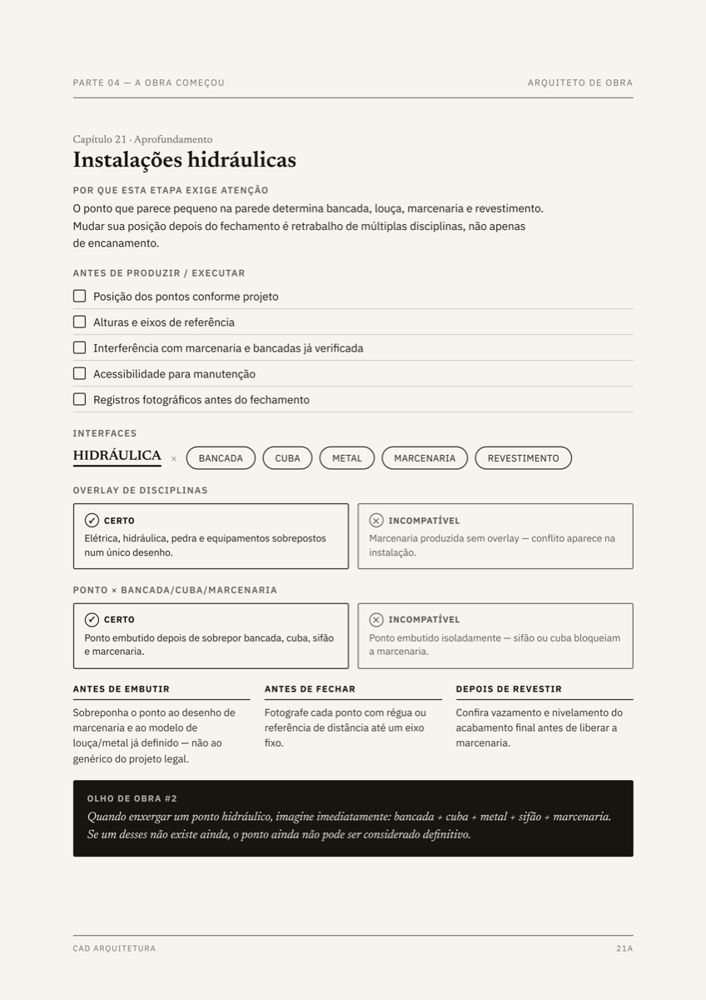
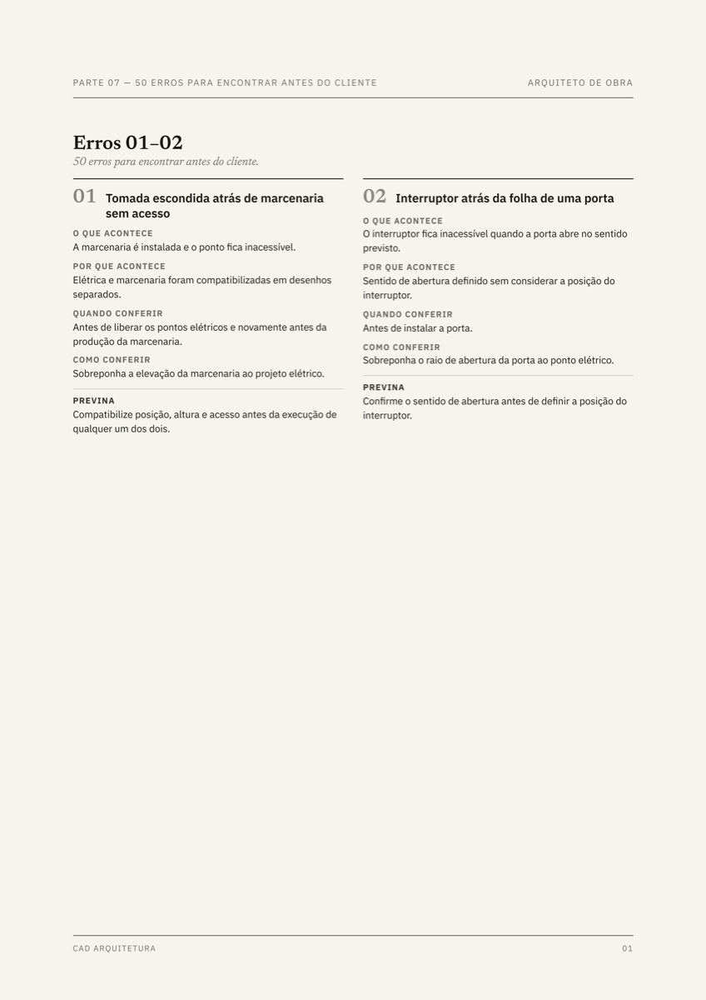
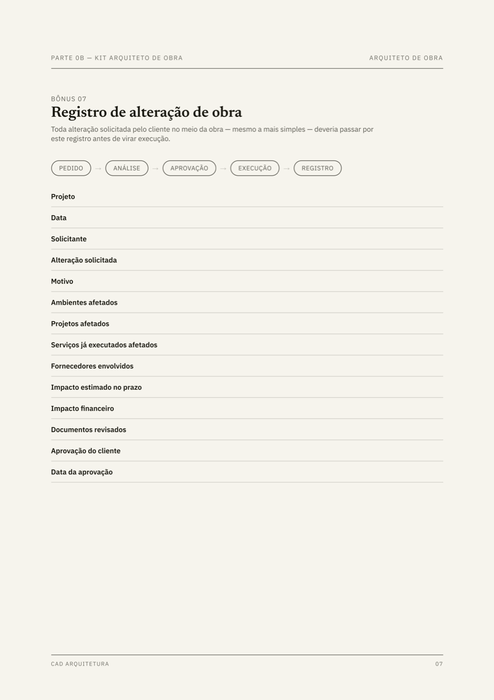

Antes da visita
Entenda o que precisa ser conferido e organize os pontos críticos antes de chegar ao canteiro.
GUIA PRÁTICO · 121 PÁGINAS · ACESSO DIGITAL
10 anos de mercado · 146 projetos executados · Arquitetura · Engenharia · Design
Um guia prático de acompanhamento de obra com pontos de conferência e ferramentas para organizar cada visita.
50 erros explicados · 7 ferramentas prontas para usar
PROJETO → EXECUÇÃO → ENTREGA
A SITUAÇÃO REAL DA OBRA
Você chega para uma visita. O cliente pergunta se aquilo está certo. O pedreiro espera uma decisão. O marceneiro precisa confirmar uma medida.
Projetar bem não significa automaticamente saber tudo o que precisa ser conferido durante a execução.
O problema não é não saber tudo. É não saber onde olhar primeiro.
O CUSTO DE CHEGAR TARDE
Ele aparece depois.
Em acompanhamento de obra, saber quando conferir pode ser tão importante quanto saber o que conferir.
ARQUITETO DE OBRA
Você não precisa entrar na obra sabendo tudo.
Precisa entrar sabendo o que procurar.
DEMONSTRAÇÃO REAL DO PRODUTO
Não é apenas conteúdo para ler. É material para consultar e utilizar trabalhando.



DA PREPARAÇÃO À PÓS-VISITA
Entenda o que precisa ser conferido e organize os pontos críticos antes de chegar ao canteiro.
Saiba onde olhar, quais interfaces observar e quais erros identificar antes que a execução avance.
Registre decisões, alterações e pendências para manter histórico e controle do acompanhamento.
O QUE ESTÁ INCLUÍDO
páginas de conteúdo aplicado à rotina de obra.
erros de obra explicados, com contexto e prevenção.
ferramentas práticas para visitas e controle da execução.
NÃO É SÓ PARA LER
Modelos práticos para tirar decisões da memória e colocar o acompanhamento em um processo claro.
PARA QUEM É
NÃO É UMA PROMESSA DE...
AUTORIDADE
10 anos de mercado.
146 projetos executados.
O Arquiteto de Obra nasceu da experiência da CAD acompanhando projetos da prancha à execução.
Organizamos em um único material os pontos de conferência, erros e ferramentas que ajudam o arquiteto a entrar no canteiro sabendo o que observar.
O QUE VOCÊ RECEBE
O conjunto de materiais para se preparar, conferir e registrar melhor cada etapa.
pagamento único
Quero acessar agora por R$97 →Acesse o conteúdo, veja as ferramentas e avalie se o Arquiteto de Obra faz sentido para sua rotina. Se não fizer, você pode solicitar o reembolso dentro do prazo de garantia.
PERGUNTAS FREQUENTES
Após a confirmação do pagamento, o acesso ao eBook digital é liberado pela Hotmart no seu e-mail e na área de compras.
Sim. O guia ajuda estudantes a compreenderem a sequência da obra e os pontos de controle que conectam projeto e execução.
Não. Ele foi criado justamente para organizar seu olhar antes e durante as primeiras experiências no canteiro.
Sim. Os modelos foram preparados para apoiar a organização das suas visitas, registros e pendências.
Sim. Após a confirmação do pagamento único, o acesso digital é liberado pela Hotmart.
Sim. Você tem 7 dias para conhecer o material e solicitar o reembolso dentro do prazo, caso não faça sentido para sua rotina.
DO PROJETO AO CANTEIRO
Adicione o Briefing Arquitetônico Assertivo por R$ 49,90 de R$ 89,88 44% OFF